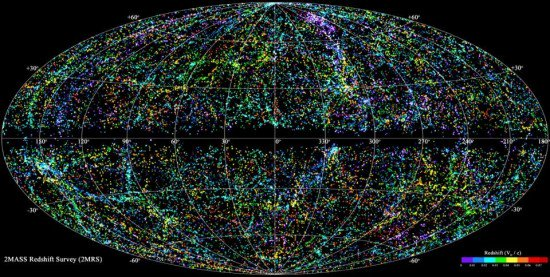

El Universo es todo, sin excepciones. Es el continuo espacio-tiempo en el que nos encontramos, junto con toda la materia y la energía existentes en él. Está compuesto por galaxias y adentro de las galaxias hay planetas, satélites, astros, estrellas, gas y polvo cósmico. Así pues, en este artículo que nos ocupa vamos a describir brevemente cada uno de ellos.

Galaxias
Las galaxias son un conjunto de estrellas, nubes de gas, planetas, polvo cósmico, materia oscura y energía unidos gravitatoriamente en una estructura más o menos definida y tienen cuatro configuraciones distintas: elípticas, espirales, lenticulares e irregulares.De dicha estructura forma parte el Sol, (estrella vista desde la Tierra). Sólo tres galaxias exteriores son visibles a simple vista:Andrómeda, la Pequeña
y la Gran Nube de Magallanes. Estas dos últimas son bien visibles sólo en el hemisferio sur.
Una constelación es un grupo de estrellas que toma una forma imaginaria en el cielo nocturno. Son usualmente denominadas en honor a caracteres mitológicos, personas, animales y objetos.
Estrellas
Las estrellas son los cuerpos celestes más numerosos y visibles en nuestro cielo nocturno.Son esferas de plasma, gigantes y luminosas. Tienen un cambio rápido de intensidad y brillo que conocemos como centelleo, producto de la constante actividad de su materia compuesta de gas y plasma incandescentes que brillan con luz propia, a temperaturas de miles de grados.
Los tipos de estrellas es la se clacifican según su luminosidad y temperatura por los astrónomos. Mediante esta clasificación de las estrellas se determina que cuanto más roja se observa una estrella, más fría es, pues las más calientes son las que muestran un color azul y son:Hipergigantes, Supergigantes Luminosas, Supergigantes, Gigantes luminosas, Gigantes, Sub-gigantes, Enanas (Sol) Sub-enanas. Tambien,los diferentes tipos de estrellas según sus estados y ciclo de vida destacamos: protoestrellas, gigantes rojas, enanas blancas, enanas,amarillas naranjas, marrones, negras y sus remanentes o residuos como las estrellas de neutrones y los agujeros negros.
Remanentes
Planetas
Según la definición adoptada por la Unión Astronómica Internacional, un planeta es un cuerpo celeste que orbita alrededor de una estrella o remanente de ella,
tiene suficiente masa para que su gravedad supere las fuerzas del cuerpo rígido, de manera que asuma una forma en equilibrio hidrostático (prácticamente esférica).
Ha limpiado la vecindad de su órbita de planetesimales, o lo que es lo mismo tiene dominancia orbital y No emite una luz propia.
Los científicos sostienen que el sistema solar es el conjunto formado por el Sol y ocho planetas más sus respectivos satélites, que giran alrededor de cada uno. Además, indican que el sistema solar está conformado por planetas enanos, asteroides, cometas, meteoritos y corpúsculos interplanetarios.
Existesn cuerpos celestes que hipoteticamente podrian existir.como son: los aguejros blancos, la estrella negra o de la noche o los aguejros de gusanos espaciales.